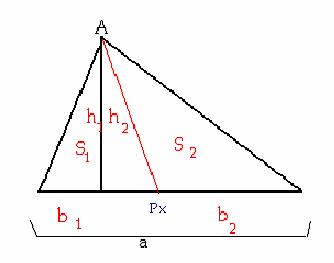

|
José María
Pedret. Ingeniero Naval. Esplugues de Llobregat (Barcelona). |
|
|
|
"..
Y el problema, Trazar
una recta por un punto dado que divida un triángulo dado en dos partes cuyas
áreas estén según una razón dada, puede
resolverse reduciéndolo a la siguiente construcción: Trazar
desde un punto dado la tangente a una hipérbola de la que se conocen las
asíntotas y una tangente. Se
deja como ejercicio para el estudiante." |
|
|
|
Resolver este problema: Quien quiera ir rápido puede consultar la solución al
problema 137 de FRANCISCO JAVIER GARCÍA CAPITÁN en las páginas de RICARDO
BARROSO |
Pedret, J.M. (2006): Comunicación
personal
Solución de Manuel Peña Alcaraz,estudiante de 4 º de ESO en el Colegio
Portaceli de Sevilla (29 de marzo de 2006)
SOLUCIÓN
Si cogemos como punto dado un punto cualquiera que no sean los vértices, no podemos hacer cualquier línea, pues en muchas ocasiones tendríamos un triángulo y un cuadrilátero, por lo que la única opción sería coger un punto diferente para cada relación de áreas y unirlo a un vértice. Cojamos uno de estos vértices, y para comprenderlo mejor, pongámoslo mirando hacia abajo, de modo que llamemos a este vértice A y a la base a. Cualquier recta que hagamos dividirá al triángulo en dos y además, estos dos nuevos triángulos tendrán la misma altura, por lo que la relación que nos den hemos de tenerla en cuenta al poner la base dado que el área de un triángulo es , y si tenemos la altura que no cambia, la relación la cumplimos con la incógnita de la base. Por lo que el punto que hemos de encontrar ha de estar a la distancia deseable los dos lados.
